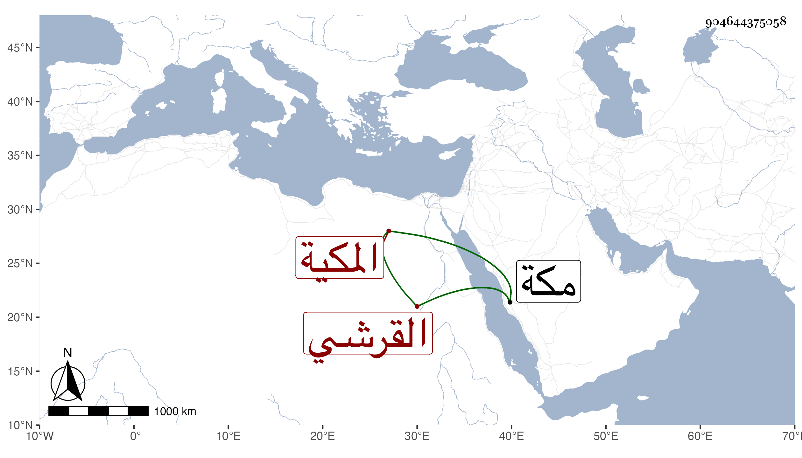

0902Sakhawi.DawLamic.ITO20230111-ara1.EIS1600.904644375058
Biography ID: 904644375058
944
أم كلثوم ابنة الجمال محمد بن عبد الله بن ظهيرة القرشي المكية واسمها أم الوفا وتدعى سعادة ؛ أمها علما ابنة الشهاب أحمد بن ظهيرة . ولدت في ذي الحجة سنة خمس وثمانين وسبعمائة بمكة وسمعت من أبيها ، وأجاز لها في سنة ثمان وثمانين فما بعدها ابن حاتم والنشاوري والتنوخي وابن الشيخة وغيرهم وما كأنها حدثت لكن أجازت وممن روى عنها ابن فهد ، وتزوجها قريبها أبو الخير بن أبي السعود بن ظهيرة ثم طلقها فتزوجت الشريف عبد اللطيف بن أبي الفتح الفاسي . وماتت عنده في شعبان سنة سبع وثلاثين بمكة ، وكانت دينة خيرة كثيرة التحرى في الطهارة رحمها الله .
